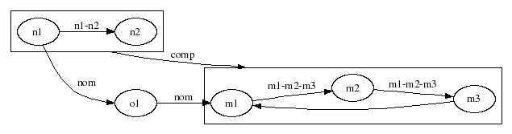

Graphs
Creating Graphs
Graphs are respresented by graph objects. A graph object consists of a root graph object and may contain multiple subgraphs, nodes and edges between nodes. Any number of graph objects may coexist in a single Lua script.
A graph is created by one of three methods:
- Create a single graph first via graph.open() function and then add other objects to the created graph using the methods of the objects.
- Read a graph defined in DOT syntax from a file using the graph.read() function
- Create a single graph using the graph.<type>graph() function defining all the elements in the function's parameter table.
Each graph holds a set of default properties or attributes for subgraphs, nodes and edges. Default properties can be overwritten by properties individually set for a specific object.
Layout Engines
Once a graph object has been instantiated with attributes set, it can be layed out using the graph's method g:layout(METHOD) , where METHOD is the name of the layout algorithm. The layout algorithm appends coordinate attributes to all objects, which can then be used by a rendering engine to actually draw the graph. LuaGRAPH supports all algorithms provided by the graphviz libraries:
- dot
-
- directed graph layout. This is the default algorithm.
- neato
-
- undirected graph layout using spring models
- fdp
-
- undirected graph layout using the spring model
- circo
-
- circular graph layout, where nodes are placed in a circle
- twopi
-
- radial graph layout
- nop, nop2
-
- undirected graph layout like neato, but assumes the graph has position attributes attached.
Rendering
After the layout process the graph is rendered using the graph's method g:render(TYPE [, FILE]) with TYPE defining the output format which is written to the output file FILE or to STDOUT, if the filename is omitted. The following output formats are supported:
luagraph$ lua -l graph -e "table.foreach(graph.OUTPUTFORMATS, print)"
fig FIG
wbmp Wireless BitMap format
jpg JPEG (deprecated - 8 May 2006 - will no longer be supported)
pcl Hewlett Packard Printer Control
svg Scalable Vector Graphics
imap Server-side and client-side imagemaps
jpeg JPEG (deprecated - 8 May 2006 - will no longer be supported)
dot DOT
gd2 Graphics Draw 2 format
cmapx Server-side and client-side imagemaps
ismap Server-side imagemap (deprecated)
vrml VRML
plain-ext Extended text format
dia Dia format
xdot extended DOT
mif FrameMaker MIF format
cmap Client-side imagemap (deprecated)
svgz Scalable Vector Graphics
gd Graphics Draw format
ps2 PostScript for PDF
ps PostScript
gif Graphics Interchage Format
mp MetaPost
vtx Visual Thought format
plain Simple text format
png Portable Network Graphics format
hpgl Hewlett Packard Graphics Language HP-GL/2
pic Autodesk PIC
Functions
g, err = graph.open(NAME [, TYPE])
Creates a graph with name NAME and of type TYPE, which takes one of the following string values:
- "directed" (default)
-
- A directed graph drawn as hierarchy.
- "undirected"
-
- An undirected graph without any hierarchy.
- "strictdirected"
-
- A strict directed graph. Multi-edges are silently ignored.
- "strictundirected"
-
- A strict undirected graph. Multi-edges are silently ignored.
Returns a graph userdata object g or nil plus an error message in case of failures.
g, objects = graph.read(FILENAME [, DOSCAN])
Reads a file in "DOT" notation of name FILENAME and creates a graph object g. If the boolean parameter DOSCAN is given the function will also iterate through subgraphs, nodes and edges in the graph and provide corresponding userdata objects in a collection objects. This collection is a table which contains 3 lists for subgraphs, nodes and edges.
If the parameter DOSCAN is omitted, only the graph object and an empty (nil) collection are returned.
If an error occurs the function returns nil plus an error string.
g, err =
graph.digraph(PARAM)
g, err = graph.strictdigraph(PARAM)
g, err = graph.graph(PARAM)
g, err = graph.strictgraph(PARAM)
These functions are intended to create a graph containing subgraphs, nodes and edges from a single function call, where PARAM is a table defining graph objects contained in the created graph. This allows to describe a graph in form of a Lua table.
The name of the graph is either provided as PARAM[1] or PARAM.name. All other elements with numerical index must contain constructors for the creation of either subgraphs, nodes or edges. LuaGRAPH provides the functions graph.subgraph(), graph.cluster(), graph.node(), graph.record() and graph.edge() that deliver appropriate constructors for these objects.
Any attributes to the graph can given as elements with a non-numeric element of the parameter table. Prototype (default) values are specified via the table attributes 'graph', 'node' and 'edge'.
The function returns a userdata object g or nil plus an error message in case of failures.
Example:
gr = require "graph"
--
-- Formatted printing
--
local function printf(fmt, ...)
print(string.format(fmt, unpack(arg)))
end
--
-- Convenience
--
local node, edge, subgraph, cluster, digraph, strictdigraph =
gr.node, gr.edge, gr.subgraph, gr.cluster, gr.digraph, gr.strictdigraph
--
-- The definition of a graph
--
local g = strictdigraph{"G",
compound = "1",
rankdir = "LR",
size="6.5,6.5",
comment = "LuaGraph: exam2.lua",
cluster{"c1",
edge{
node{"n1", comment="123"},
node{"n2"},
label = "n1-n2"
},
},
cluster{"c2",
edge{
node{"m1"},
node{"m2"},
node{"m3"},
label = "m1-m2-m3"
},
edge{"m3", "m1"},
},
node{"o1"},
edge{"n1", "m2", ltail="cluster_c1", lhead="cluster_c2", label="comp"},
edge{"n1","o1", "m1", label="nom"}
}
--
-- Show the graph using dotty
--
if true then
local fn = os.tmpname()..".dot"
g:write()
g:write(fn)
os.execute("dotty "..fn)
os.remove(fn)
end
--
-- Make the layout using 'dot' (default) engine
--
print("Layout ...")
g:layout()
--
-- Render the graph into postscript format
--
print("Render ...")
g:render("ps", "out.ps")
g:render("gif", "out.gif")
g:render("svg", "out.svg")
g:render("png", "out.png")
--
-- Close the graph
--
print("Close ...")
g:close()
The above example produces the following graph:
ctor = graph.subgraph(PARAM)
Returns a constructor for creating a subgraph.
The name of the subgraph is either provided as PARAM[1] or PARAM.name. All other elements of PARAM with numerical index contain functions for the creation of either subgraphs, nodes or edges. LuaGRAPH provides the functions graph.subgraph(), graph.cluster(), graph.node(), graph.record() and graph.edge() that deliver appropriate constructors for these objects.
Any attributes to the subgraph can be given as elements of the parameter table with a non-numeric index.
ctor = graph.cluster(PARAM)
Returns a constructor for creating a cluster, which is an ordinary subgraph but with the string "cluster_" prepended to the given name in the parameter table PARAM. See graph.subgraph() for details.
ctor = graph.node(PARAM)
Returns a constructor for creating a node. The parameter table has the same format as a graph's node creation method g.node().
ctor = graph.record(PARAM)
Returns a constructor for creating a record. The parameter table PARAM has the same format as a graph's record creation method g:record().
ctor = graph.edge(PARAM)
Returns a constructor for creating an edge. The parameter table PARAM contains the nodes of the edge in its elements with numberical index. The node is described by either a node creation constructor graph.node(), a node object (userdata) or a node name (string). The nodes are created on the fly.